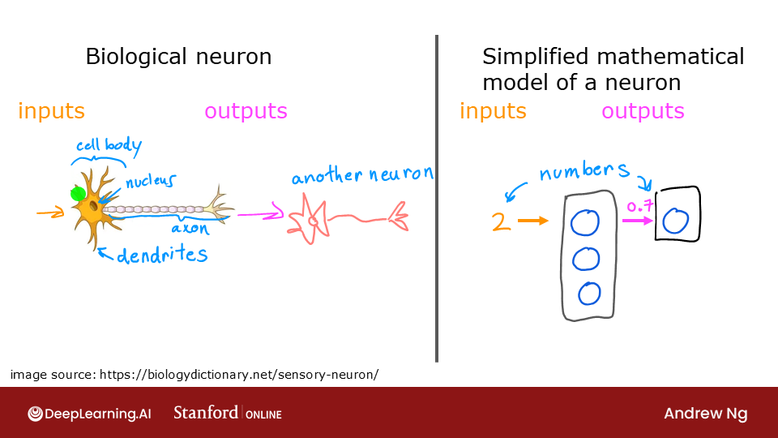
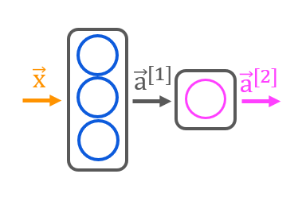
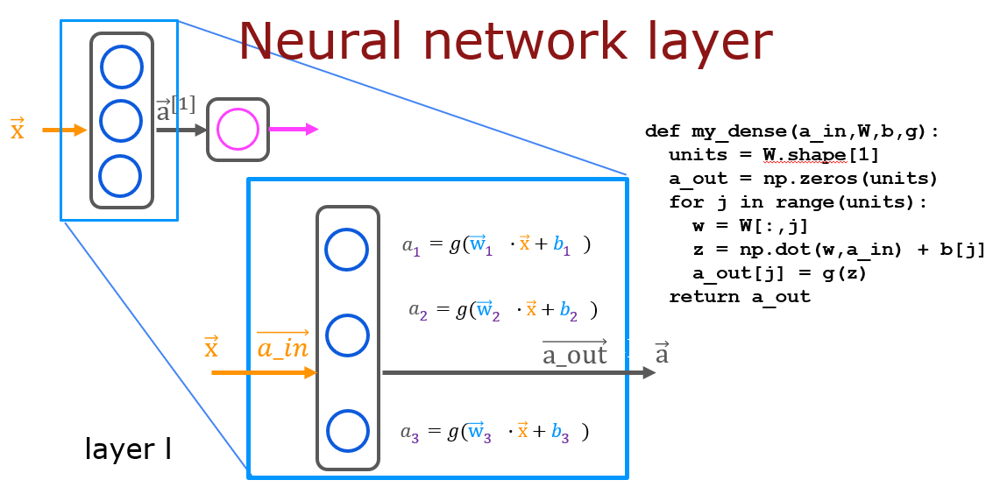
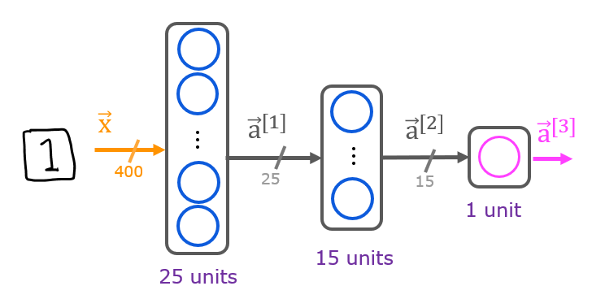

Mạng nơ-ron & forward propagation
Xếp chồng nhiều logistic regression thành từng lớp, và mạng sẽ tự học ra những đặc trưng mà ta không cần thiết kế bằng tay.
Từ nơ-ron sinh học đến nơ-ron nhân tạo
Một nơ-ron nhân tạo nhận các đầu vào, tính tổng có trọng số, rồi đưa qua một hàm kích hoạt (activation). Thật ra đó chính là mô hình ta đã biết:
- Không có activation (linear): \(a = \mathbf{w}\cdot\mathbf{x} + b\) — hồi quy tuyến tính.
- Activation sigmoid: \(a = g(\mathbf{w}\cdot\mathbf{x} + b)\) — logistic regression.
Lab01 kiểm chứng điều này: một lớp Dense(units=1, activation='linear') của TensorFlow, gán trọng số bằng tay, cho đúng kết quả như np.dot(x, w) + b.

Lớp (layer) và mạng
Một lớp gồm nhiều nơ-ron cùng nhận một đầu vào. Lớp \(l\) có \(j\) nơ-ron, mỗi nơ-ron có vector trọng số \(\mathbf{w}_j^{[l]}\) và bias \(b_j^{[l]}\):
với \(\mathbf{a}^{[0]} = \mathbf{x}\). Đầu ra của lớp này là đầu vào của lớp tiếp theo. Các lớp giữa gọi là lớp ẩn (hidden layer); lớp cuối là lớp đầu ra.
Trong ví dụ dự đoán áo bán chạy, lớp ẩn có thể tự học ra các khái niệm như “giá cả phải chăng”, “mức độ nhận biết”, “chất lượng cảm nhận” từ các đặc trưng thô (giá, phí ship, marketing…). Ta không cần thiết kế những đặc trưng này — đó là sức mạnh của mạng nơ-ron so với feature engineering thủ công ở chương 5.
Ví dụ: rang cà phê
Lab02 và Lab03 dùng dữ liệu rang cà phê: hai đặc trưng là nhiệt độ (°C) và thời gian (phút); nhãn là rang ngon (1) hay không (0). Vùng “ngon” là một tam giác — rang quá ngắn hoặc quá nguội thì sống, quá lâu hoặc quá nóng thì cháy.

Sau khi huấn luyện, mỗi nơ-ron ở lớp ẩn học được một “cạnh” của tam giác — ví dụ một nơ-ron bật khi nhiệt độ quá thấp, một nơ-ron bật khi thời gian quá ngắn. Lớp đầu ra kết hợp chúng lại.
TensorFlow / Keras
import tensorflow as tf
from tensorflow.keras import Sequential
from tensorflow.keras.layers import Dense
# Chuẩn hoá đặc trưng bằng lớp Normalization của Keras
norm_l = tf.keras.layers.Normalization(axis=-1)
norm_l.adapt(X) # học mean, variance
Xn = norm_l(X)
model = Sequential([
tf.keras.Input(shape=(2,)),
Dense(3, activation='sigmoid', name='layer1'),
Dense(1, activation='sigmoid', name='layer2'),
])
model.compile(loss=tf.keras.losses.BinaryCrossentropy(),
optimizer=tf.keras.optimizers.Adam(learning_rate=0.01))
model.fit(Xt, Yt, epochs=10)
predictions = model.predict(norm_l(X_test))
yhat = (predictions >= 0.5).astype(int)Epoch = một lượt đi qua toàn bộ dữ liệu huấn luyện. Keras chia dữ liệu thành các batch (mặc định 32 ví dụ), mỗi batch là một bước cập nhật. Log 6250/6250 nghĩa là 6250 batch trong một epoch. Lab02 còn nhân bản dữ liệu (np.tile) lên 1000 lần để có nhiều bước cập nhật hơn với ít epoch.
Forward propagation bằng NumPy
Lab03 cài đặt lại đúng mạng trên chỉ bằng NumPy — để hiểu điều gì xảy ra bên trong model.predict. Trong lab, ma trận trọng số \(\mathbf{W}\) có shape \((n_{\text{in}}, n_{\text{units}})\): mỗi cột là trọng số của một nơ-ron.

my_dense: mỗi nơ-ron dùng một cột của W.Hàm mình viết trong Practice Lab:
def my_dense(a_in, W, b, g):
"""a_in: (n,), W: (n, j), b: (j,), g: hàm kích hoạt"""
units = W.shape[1]
a_out = np.zeros(units)
for j in range(units):
z = np.dot(W[:, j], a_in) + b[j]
a_out[j] = g(z)
return a_out
def my_sequential(x, W1, b1, W2, b2, W3, b3):
a1 = my_dense(x, W1, b1, sigmoid)
a2 = my_dense(a1, W2, b2, sigmoid)
a3 = my_dense(a2, W3, b3, sigmoid)
return a3Và bản vector hoá — xử lý cả lô \(m\) ví dụ trong một phép nhân ma trận:
def my_dense_v(A_in, W, b, g):
"""A_in: (m, n), W: (n, j), b: (1, j) -> A_out: (m, j)"""
z = np.matmul(A_in, W) + b
A_out = g(z)
return A_outBài thực hành: nhận dạng chữ số 0 và 1
Practice Lab dùng 1000 ảnh chữ viết tay 20×20 pixel (một phần của MNIST), duỗi thành vector 400 phần tử. Mạng 3 lớp:

model = Sequential([
tf.keras.Input(shape=(400,)),
Dense(25, activation='sigmoid', name='layer1'),
Dense(15, activation='sigmoid', name='layer2'),
Dense(1, activation='sigmoid', name='layer3'),
], name="my_model")
# Số tham số: 400*25+25 = 10025, 25*15+15 = 390, 15*1+1 = 16Shape của trọng số: W1 (400, 25), W2 (25, 15), W3 (15, 1). Sau 20 epoch, mô hình nhận dạng gần như hoàn hảo trên tập này.
- Định lý xấp xỉ phổ quát: mạng chỉ với một lớp ẩn đủ rộng có thể xấp xỉ bất kỳ hàm liên tục nào. Nhưng “đủ rộng” có thể là cực kỳ rộng; mạng sâu thường biểu diễn cùng hàm đó với ít tham số hơn nhiều.
- Học phân cấp: với ảnh, lớp đầu học cạnh, lớp sau học hình dạng, lớp sâu hơn học bộ phận (mắt, mũi), cuối cùng là khuôn mặt.
- Dense (fully-connected) chỉ là một loại lớp. Convolutional layer (CNN) cho ảnh: mỗi nơ-ron chỉ nhìn một vùng nhỏ và chia sẻ trọng số → ít tham số, bất biến với dịch chuyển. Recurrent / Transformer cho chuỗi (văn bản, âm thanh).
- Khởi tạo trọng số ngẫu nhiên là bắt buộc: nếu mọi trọng số bằng 0, các nơ-ron trong một lớp sẽ luôn giống hệt nhau (vấn đề đối xứng).
- C2_W1_Lab01 — Neurons and Layers
- C2_W1_Lab02 — Coffee Roasting (TensorFlow)
- C2_W1_Lab03 — Coffee Roasting (NumPy)
- C2_W1 Practice Lab — Handwritten Digit Recognition, Binary (graded: Sequential model,
my_dense,my_dense_v)
Ghi nhớ
- Một nơ-ron = \(g(\mathbf{w}\cdot\mathbf{a}+b)\); một lớp = nhiều nơ-ron; mạng = nhiều lớp nối tiếp.
- Forward prop: \(\mathbf{A}^{[l]} = g(\mathbf{A}^{[l-1]}\mathbf{W}^{[l]} + \mathbf{b}^{[l]})\).
- Keras:
Sequential([Dense(...), ...])→compile(loss, optimizer)→fit→predict.
Tự kiểm tra
Lớp Dense có 64 nơ-ron, đầu vào 100 chiều. Có bao nhiêu tham số?
\(100 \times 64 + 64 = 6464\) (trọng số + bias).
Đầu vào lô có shape (32, 400), W1 có shape (400, 25). A1 có shape gì?
(32, 25) — 25 giá trị kích hoạt cho mỗi trong 32 ví dụ.